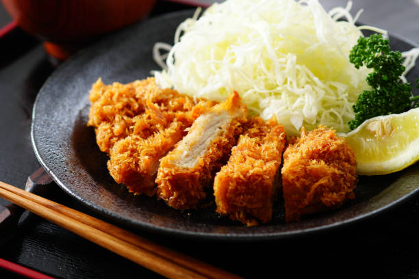

🏠 Home Page
Tonkatsu Platter 🥗

Description
A Tonkatsu platter features a crispy, breaded, and deep-fried pork cutlet, typically served with shredded cabbage, rice, and a savory Tonkatsu sauce. The pork is tender and juicy on the inside, while the breading offers a satisfying crunch.
Rich in protein and iron, this dish is both flavorful and filling. The accompanying cabbage provides fiber and essential vitamins, while the rice adds a hearty base.
Tonkatsu is a popular Japanese comfort food that can be enjoyed as a satisfying meal, offering a balance of protein, fiber, and healthy fats when paired with fresh vegetables.
Ingredients
- Boneless Pork Chop - 4
- Sliced Cabbage - 4 cups
- Panko - 1 Cup
- Eggs - 2
- Flour - 6 tbsp
- Tonkatsu Sauce - 4 tbsp
- Japanese Mustard - 2 tbsp
- Vegetable Oil - 100ml
- Sesame Seed - 2 1/2 tbsp
- Salt
Steps
- Dry the 4 Boneless Pork cutlets and pound them.
- Beat 2 Eggs and pour them into a vessel.
- Drench each pork cutlet in the Flour and dip them in egg and coat them with Panko
- Take a wide Frying pan and fill in the Vegetable Oil and heat it over to 170oC.
- Fry the cutlets until they are golden brown on both the sides.
- For the Sesame mix, Add 2 1/2 tbsp of Sesame Seeds and 1 Pinch of Salt and crush the in the mortar.
- Slice the Tonkatsu into pieces.
- Plate 1 Cup thin sliced Cabbage for each Tonkatsu.
- Drizzle 1 tbsp of Tonkatsu sauce over the Tonkatsu.
- Add 1 tbsp of Japanese Mustard and spread Sesame mix over the plate.
The Tonkatsu Platter is all set to eat!!!!